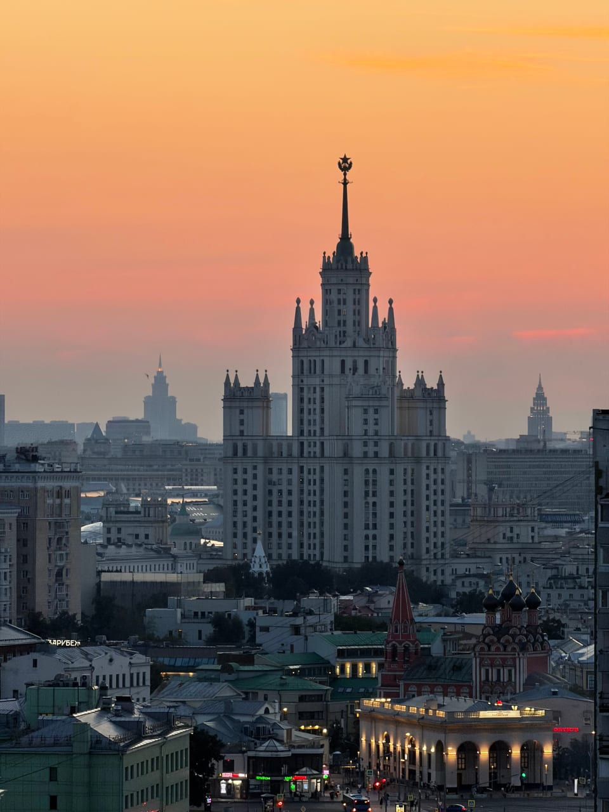

Статьи ·
Высотка на Котельнической: откуда на неё смотреть
Чем отличаются три ракурса на самую узнаваемую высотку каталога: Таганская с Кремлём, Марксистская в закатном свете и Новокузнецкая через реку — и какой выбрать для съёмки.
Высотка на Котельнической набережной — пожалуй, самое узнаваемое здание из «семи сестёр»: её легко опознать по силуэту даже издалека. Мы возим на крыши, откуда она видна, и каждая точка показывает её по-своему. Разбираем три ракурса, чтобы вы выбрали тот, что подходит вашему кадру.
Что за здание
Это жилой дом, одна из высоток, построенных в Москве в конце 1940-х и начале 1950-х годов. Он стоит на набережной Москвы-реки, у впадения в неё Яузы, и со шпилем поднимается больше чем на 170 метров. Центральная башня с ярусами и боковые корпуса делают здание вытянутым вширь: его просто не спутать с другими.
Для съёмки это удачный объект. Вертикальный силуэт читается на любом фоне — на небе, на реке, рядом с кремлёвскими башнями. А широкая основа даёт кадру опору: башня не кажется оторванной от города.
На земле эту высотку обычно видят с набережной или с моста: она нависает, и целиком её не охватить. Крыша даёт то, чего не хватает внизу, — расстояние. Поэтому ниже мы сравниваем не «лучше» и «хуже», а три разных способа посмотреть на одно и то же здание: с историческим центром, с закатным небом и с водой.
Три ракурса на одну высотку
Таганская: высотка и Кремль в одной панораме
С крыши у метро Таганская открывается широкая панорама центра: Кремль, собор Василия Блаженного, Москва-река, а на горизонте — башни Сити. Котельническая здесь не главный герой, а часть большой картины: она читается справа, на фоне реки.
Этот ракурс подойдёт, если вам нужна «открыточная» Москва, где в одном кадре и исторический центр, и сталинская высотка. Вечером включается подсветка, и здание заметно теплеет на фоне сумеречного города.
Марксистская: закатный силуэт
С крыши у метро Марксистская высотка стоит почти по центру кадра, целиком — от нижних ярусов до шпиля. Это самый «портретный» из трёх видов. Рядом нет больших объектов, которые спорили бы с ней за внимание, а над ней остаётся много неба.
Лучше всего этот ракурс работает на закате. Солнце уходит за башню, и она превращается в тёмный силуэт на розово-оранжевом или алом небе. Погоду заказать нельзя: цвет бывает разным, но сама композиция работает при любом свете.
Новокузнецкая: высотка через реку
С крыши у метро Новокузнецкая между вами и зданием лежит Москва-река. Вода превращает кадр в двухслойный: на переднем плане набережная и теплоходы, на втором — высотка. Днём снимок получается светлым и спокойным, а вечером в реке отражается подсвеченный фасад.
Если у вас есть любимая фотография в стиле «город и вода», это ваш выбор. Он же подойдёт, когда хочется «живой» кадр: теплоходы на реке и вечерние огни набережной добавляют картинке движения.
Как выбрать ракурс
- Нужен Кремль и широкая панорама — Таганская.
- Нужен чистый портрет высотки целиком и закат — Марксистская.
- Нужны вода, отражения и теплоходы — Новокузнецкая.
Для съёмки пары или портрета с высоткой за спиной подходит Марксистская: здание крупное, и фигура на его фоне не теряется. Для видео и «живых» кадров лучше река с Новокузнецкой, где в картинке всегда что-то происходит.
Если вы выбираете между двумя вариантами, ориентируйтесь на то, что должно оказаться рядом с высоткой. Кремль и река — Таганская. Одно небо — Марксистская. Только вода — Новокузнецкая. Остальное вы почти не заметите: на кадре всегда один главный герой.
Когда приходить
Днём все три точки хороши для спокойной прогулки: видны детали фасада и колоннада, а свет ровный. Но самое выразительное время — вечер. Примерно за час до заката солнце ложится низко и подсвечивает ярусы, потом здание уходит в силуэт, а в сумерках включается подсветка.
Базовая прогулка длится 1 час. Если хотите задержаться до огней, при записи спросите о продлении — 500 ₽ с человека за час, если площадка свободна. Гарантировать погоду и цвет неба мы не можем, поэтому смотрите прогноз и берите тёплый слой: наверху всегда свежее, чем на улице.
Как снять высотку на телефон
- Вертикальный кадр. Башня вытянута вверх, поэтому портретная ориентация ложится на неё без пустых полей. Оставьте над шпилем немного неба.
- Горизонт ровно. Заваленный горизонт на высотке виден сразу: выровняйте кадр по сетке камеры.
- Сумерки. Пока небо ещё синее, а подсветка уже горит, в кадре читаются и фон, и здание.
Штатного фотографа у нас нет: снимаете сами, на телефон, или приходите со своим.
Как проходит прогулка
Выберите крышу в каталоге на главной и оставьте заявку или напишите в Telegram-бот. Набор площадок меняется, поэтому укажите, какой ракурс вам нужен: подскажем, что доступно сейчас. Адреса мы не публикуем: заранее известно только, у какого метро крыша, а точное место встречи сообщаем после подтверждения записи.
Сопровождающий встречает вас, поднимается с вами наверх и коротко объясняет правила на площадке — дальше час ваш. Стоимость — от 2000 ₽ за человека.
Читайте также: «Сталинские высотки Москвы» — какую «сестру» с какой крыши смотреть, «Крыши с видом на Кремль» — чем различаются виды на исторический центр с Таганской и Курской, и «Что видно с крыш Москвы» — какие ещё ориентиры открываются с высоты.
FAQ
Частые вопросы о Котельнической высотке
Какая крыша лучше всего подходит, чтобы снять высотку на Котельнической?
Если нужен классический портрет здания целиком, выбирайте площадку у метро Марксистская: высотка стоит по центру кадра, от ярусов до шпиля. Если хочется Кремль и реку в одной панораме, смотрите на Таганскую, а для отражения в воде — на Новокузнецкую.
Видна ли высотка на Котельнической вечером с подсветкой?
Да, вечером здание подсвечивается, и на кадрах с Таганской, Марксистской и Новокузнецкой это хорошо видно. Чтобы застать подсветку, приходите ближе к закату, а при необходимости спросите о продлении: 500 ₽ с человека за час, если площадка свободна.
Можно ли выбрать конкретную крышу при записи?
Да, при заявке на главной или в Telegram-боте укажите, какой ракурс нужен. Набор площадок меняется, поэтому перед записью проверьте в каталоге, доступна ли нужная крыша сейчас; точное место встречи сообщаем после подтверждения записи.
Над городом